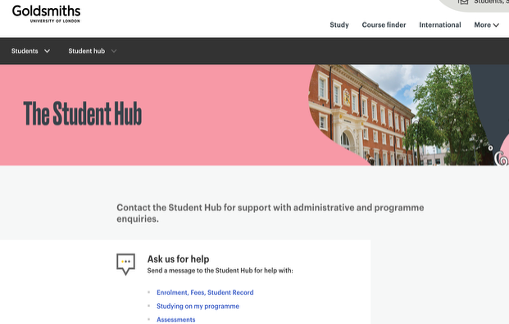
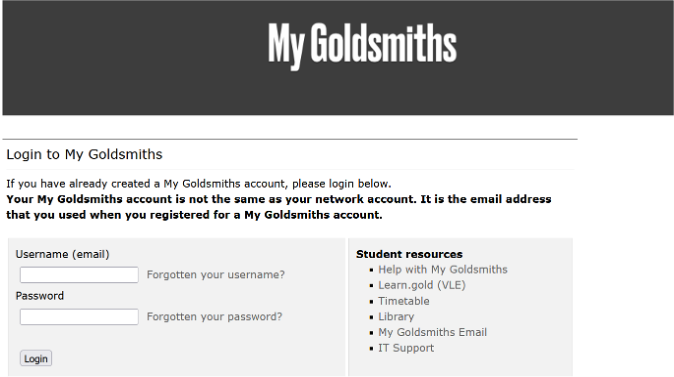
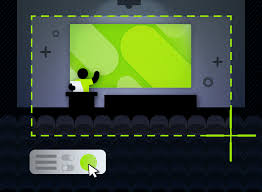

These slides will cover:
Programme Director: Foundation Year
Email: g.wright@gold.ac.uk
Office: WB 200/2
Office Hours: TBC
Head of Naps and Tail-Wagging
insta: @dougalmania
Office: Under the desk of WB 200/2
Office Hours: by appointment
Dr Diana Omigie
Note: We will be scheduling a 1:1 meeting for all of you next week with your allocated Personal Tutor
Dr Caroline Rix
Dr Nicole Eisen
Dr Robert Chapman
Dr Bence Palfi
Dr Gordon Wright
Visit the comprehensive welcome guide:
https://www.gold.ac.uk/welcome/
Everything you need to know for starting your studies at Goldsmiths.
Contact Programme Director:
For coursework, deadlines, module content
Contact Student Hub:

Location: Rutherford Building (Library), Ground Floor
Hours: Monday - Friday: 10am - 4pm
Reading weeks: 1 - 4pm
Manage student record
Change personal details
View results & transcripts

Specialist Psychology Librarian: Caitlin Moore
To be arranged prior to practice essay submission
Full access to Senate House Library resources
www.gold.ac.uk/it/service-desk/
Email: helpdesk@gold.ac.uk
Main Programme Page: “Integrated Degree in Psychology Foundation Year”
Direct link: learn.gold.ac.uk/course/view.php?id=24622
The main Foundation programme page contains:
Check regularly for new information!
PS50005B: Social and Developmental Psychology Term 1 ONLY
learn.gold.ac.uk/course/view.php?id=33218
PS50006B: Psychology and Life Terms 1 & 2
learn.gold.ac.uk/course/view.php?id=33219
PS50007B: Psychobiology and Cognitive Psychology Terms 1 & 2
learn.gold.ac.uk/course/view.php?id=33220
PS50008A: Research Methods and Experimental Design Term 2 ONLY
learn.gold.ac.uk/course/view.php?id=33221
Each module page contains:
Workshop 1: Academic Skills and University Transition (2 hours)
Workshop 2: Essay Writing Fundamentals + Formative Essay (2 hours)
Workshop 3: Planning and Researching a Specific Essay (2 hours)
Workshop 4: Library Skills and Information Literacy (2 hours)
Workshop 5: Digital Skills for Psychology Students (2 hours)
Digital Workbook: APA Format, Referencing, Plagiarism, and AI Use
And a ‘Getting to know each other psychologically’ social!
Teaching on modules: - PS50005B, PS50006B, & PS50007B
| # | Assignment | SEM | Due | FB |
|---|---|---|---|---|
| 1 | Practice essay | W1 | Fri 24 Oct ’25 W4 | W6 |
| 2 | Personality essay | W3 | Fri 21 Nov ’25 W8 | W10 |
| 3 | Social Psych essay | W5 | Fri 28 Nov ’25 W9 | Winter |
| 4 | Psychobiology essay | W8 | Fri 16 Jan ’26 W11 | W14 |
| 5 | Developmental essay | W10 | Fri 16 Jan ’26 W11 | W14 |
| 6 | Applications essay | W11 | Fri 13 Feb ’26 W15 | W18 |
| 7 | Research plan | NA | Fri 27 Feb ’26 W16 | W20 |
| 8 | EDS MCQ test | NA | Mon 09 Mar ’26 W18 | Spring |
| 9 | Cognitive essay | W14 | Fri 13 Mar ’26 W18 | Spring |
| 10 | EDS Home assign. | NA | Fri 20 Mar ’26 W20 | Spring |
| 11 | Research report | NA | Fri 01 May ’26 W22 | W24 |
| Lecture | Topic |
|---|---|
| 1 | Social Influence I: Conformity |
| 2 | Social Influence II: Obedience |
| 3 | Prosocial Behaviour |
| 4 | Intragroup Processes |
| 5 | Intergroup Processes |
| 6 | Attitude & Attitude Change |
| 7 | Interpersonal Communication |
| 8 | Aggression |
| 9 | Social Psychology Across Cultures |
| Lecture | Topic |
|---|---|
| 1 | Intro & Theories of Development |
| 2 | Attachment |
| 3 | Perceptual Abilities in Infancy |
| 4 | Cognitive Development |
| 5 | Parenting |
| 6 | Gender Development |
| 7 | Adolescence |
| 8 | Adulthood and Old Age |
| 9 | Summary and Revision |
| Lecture | Topic |
|---|---|
| 1 | Personality I: Trait Theories |
| 2 | Personality II: Biological Theories |
| 3 | Personality Assessment I |
| 4 | Personality Assessment II |
| 5 | Psychopathology: Definition/Classification |
| 6 | Obsessive-compulsive Disorder |
| 7 | Personality Disorders |
| 8 | Panic Disorder |
| 9 | Summary and Revision |
| Lecture | Topic |
|---|---|
| 1 | Brain Anatomy I |
| 2 | Brain Anatomy II |
| 3 | Synaptic Transmission |
| 4 | Psychobiology of Emotions |
| 5 | Sleep |
| 6 | The Visual System |
| 7 | Somatosensory Systems |
| 8 | Psychobiology of Psychiatric Disorders |
| 9 | Module summary / Revision |
10 x Lectures from specialists across the department!
| Lecture | Topic |
|---|---|
| 1 | Major Approaches to Cog Psych |
| 2 | Multi-store Model of Memory |
| 3 | Working Memory |
| 4 | Attention |
| 5 | Perception |
| 6 | Long-term Memory |
| 7 | Cognition and Emotion |
| 8 | Judgement and Decision Making |
| 9 | TBA |
| 10 | Summary and Revision |
| Lecture | Topic |
|---|---|
| 1 | Intro to Designing Good Experiments |
| 2 | Reporting Your Findings |
| 3 | Correlational Designs |
| 4 | Probabilities & Distributions |
| 5 | Significance Testing & Research Plan Briefing |
| 6 | Practice Assignment |
| 7 | Practice MCQ Test |
| 8 | Running Experiments Ethically and Effectively |
| 9 | In-class MCQ Test |
| 10 | MCQ Feedback + Lab Report Briefing |
| Lab | Topic |
|---|---|
| 1 | Observation of Human Behaviour |
| 2 | Descriptive Statistics |
| 3 | Correlational Analysis |
| 4 | Plotting Data with R |
| 5 | Running T-Tests with R |
| 6 | Project Groups: Literature Review |
| 7 | Project Groups: Methodology |
| 8 | Project Groups: Procedure |
| 9 | Lab Groups 1 & A: Live Data Collection |
| 10 | Data Analysis and Reporting |
Each student will be assigned a Personal Tutor
PS50005B: Social & Developmental Psychology
1 social essay + 1 developmental essay + 1 combined exam
PS50006B: Psychology & Life
1 personality essay + 1 applications essay + 1 combined exam
PS50007B: Psychobiology & Cognitive Psychology
1 psychobiology essay + 1 cognitive essay + 1 combined exam
PS50008A: Research Methods and Experimental Design
1 research plan + 1 EDS assignment + 1 MCQ test + 1 research report (double weighted)
You must NOT use generative AI to generate any work for assessment
Required for all assessments and modules
If you fail a module, you get two further attempts:
Attempt 1: Late summer
Attempt 2: Following academic year
Missing deadlines or exams requires EC application + supporting statement
Wednesday, Thursday & Friday in term 1
Lectures, seminars, labs, personal tutor sessions
More info: gold.ac.uk/students/seats/
This is an in-person degree, not online!
Plan to attend all sessions!
Tip
It’s easier to keep up than catch up!

Closing words - We are excited about the year ahead, and our shared mission is…
Seeing you in Year 1 this time next year!
Most information is usually available on the VLE
Contact your Programme Director:
Email: g.wright@gold.ac.uk
Visit the main programme page and use the forum:
learn.gold.ac.uk/course/view.php?id=24622
Foundation Year 2025-26